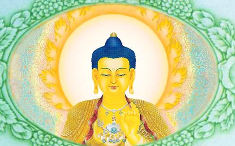

放生是我们佛教界很普遍的一个活动。拜梁皇忏第五天要放生；水陆法会第五天要放生；大型法会都少不了放生。放生始终是佛门法会当中一个重要的组成部分。
放生是对生命的尊重放生不仅是佛门善举，也是人类的一个高贵的行为。我们生长于天地之间，一切生命都是天地父母的孩子。从这个角度上说，这个蓝蓝地球上的所有生命，相互之间都是共依共存的。过去很多人认为我们人是地球食物链的最高端，弱肉强食无可厚非。事实上，把人定位在食物链的最高端是对人类的亵渎。
放生让我们看到了地球生命体之间的关系，这应该是一种良性的循环关系，这种良好的关系就应该是强者帮助弱者。我们放生，在珍爱这些生命的同时，说明我们也在反省，反省我们这个生命有没有保护弱者，有没有尊重其他的生命？我们人这样一个高级动物有没有在做高级的事情？扶助弱势群体，救助弱势生命，保护自然环境，维护生命尊严，让生命都能够逍遥
今天的世界
正因为因果不虚，所以
所以放生是救命，是赎罪，更是在拯救我们人类自身。放生说明我们人还有一点希望，我们放生的时候都是怀着一颗悲天悯人的心、长养万物的心，我们放生那一时刻的心，是天底下最美的心。这个心能消我们过去杀生吃肉、不珍惜生命所犯下的罪业。一灯能灭千年暗，一念慈悲心起，无明贪嗔所造的恶业，此刻就能灭掉。放生救命，回向世界和平，回向国泰民安，回向父母长寿，这样你在天地之间才叫仰不愧天、俯不愧地，这才是一个大写的“人”。
放生就是救父母亲人 我们现在所放的众生，它过去跟我们都是父母关系。你说怎么可能？那只小鸟，它怎么可能和我是父母关系？我们用数学思维可以推算出来。请问，你过去无量劫来投胎多少次？是不是无量？无量劫来有无量的
只是它们现在有业障，穿了一件又小又难看的衣服，做个小鸟。它们做牛马也好、做小鸟也好、做人也好，这是不是福报决定的？这像不象是一件衣服？除了这个衣服不一样，福报有大小，里面的
放生是我们
你买来小鱼，你把
纯粹的利他心就是什么？这个就是佛性啊！你佛性出来了，跟佛就会相通，回过头去再读大乘经典，你就能体会佛是怎样的情怀，佛讲的话是什么意思。通过这些熏修，我们的佛性越来越苏醒了。佛性苏醒了，你念经、念咒、
放生让我们的心越来越柔软，胸怀越来越拓展，渐渐地符合了佛教的生命观。我们开始去反思这个生命，会看到这世界很多无奈，进而会思考更多的问题。之前我们都忽略了这些思考，我们每个人努力地工作、生活，甚至也满足于一些小的快乐，通过放生之后才发现，只有究竟的
以放生过程当中所产生的这些思考，再读佛的经典就会领会得更深，再去念阿弥陀佛，也会对这个无量光无量寿领会得更深。那此时你再打坐修行，就知道修什么，就开始有正确的方向，那也就会有正确的结果。方向正确，这种因慢慢积累，就会从量变到质变。因、缘、果报，学佛正确的因升起之后，我们增上，积累资粮，到时候果也会现前。放生增慧，这个慧的因找到，增是一个增上缘，所以在救众生的时候，其实也是完成了自我拯救，自我升华。
放生要如菩萨救众生放生人人可为，天天可行，但放生质量的高低关键在于你有一种什么样的心态。放生群体化之后，大家收完钱，买的买，放的放，看的看。放的时候，大家参与的时候，真的对生命生起非常非常大的悲悯心了吗？真的生起像救自己孩子一样的心了吗？放生要有一种菩萨救我们的心态，那种心态要生起来。我提倡大家要养成放生的习惯，共修固然重要，但是更多地要自己去修。
平时去菜市场买菜，看到那些活物，我们
现代人的一个缺陷就是做什么事精神不集中，做事会走过场，甚至还会比数量，今天放了多少万块钱，放了多少条生命。放生用心是很重要的，如果你产生了菩萨救众生一样的大悲心的状态，那这个功德可以消灭我们
世间越浊恶，如果你觉醒过来，越是成就菩萨的一个机会。